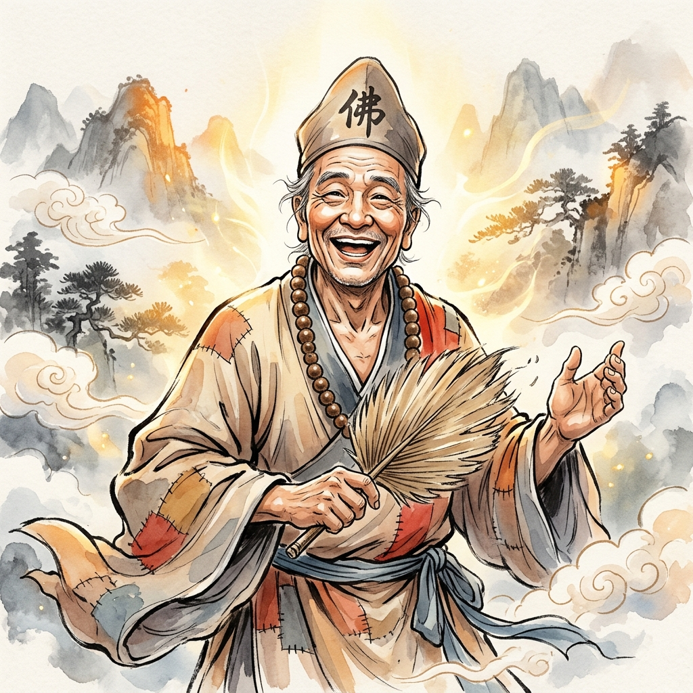
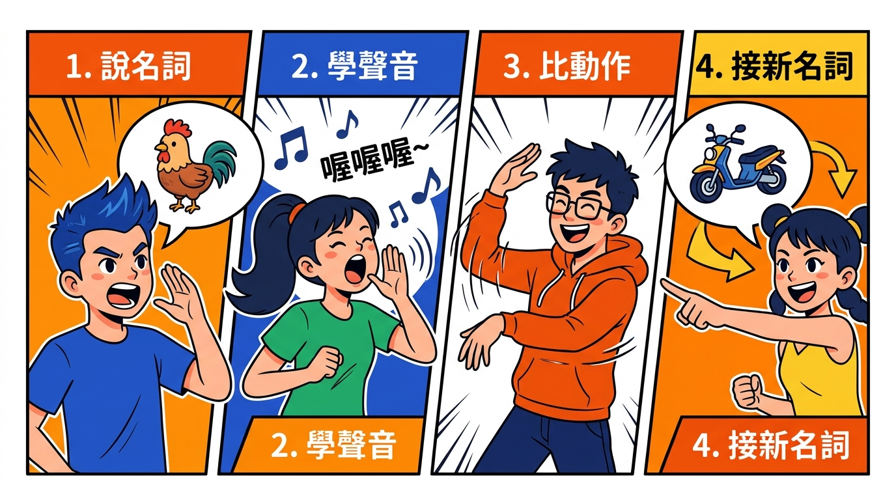

全堂 11 次互動實作
09:42 就開口，隨時換你上台！
卡住大聲喊救場台詞
這裡出錯零淘汰，全場掌聲挺你！
身聲神・接拋引・時事救場
狂歡與莊嚴一秒切換，晚會現學現用

✨ 道場活動組精神：能瘋、能玩、能控場！平時嗨翻全場，關鍵時刻懂分寸！
卡住或做錯不用下台！只要用主持人口吻大聲說一句「救場台詞」，全場鼓掌繼續體驗！
自嘲是最高級的幽默，不做人身攻擊！不拿前賢、同修或夥伴的外表、年紀、失誤開玩笑，讓每個人都有滿滿安全感。
👥 固定小組＋固定搭檔：整個上午我們都跟同一小組、同一位搭檔練習體驗！舊生小隊長請多照顧身邊的新夥伴！

🌱 第 1 關任務：不打拍子！依序接力：① 說名詞 ➔ ② 叫聲音 ➔ ③ 做動作 ➔ ④ 接新詞（名詞請保持佛堂闔家觀賞級！）
跟著拍子「啪・啪・啪・啪」走！每兩拍接下一個角色，慢一拍或做錯角色就算卡住！
📡 「哎呀！我的大腦剛剛斷網了！」
💻 「系統重新開機中…開機成功！」
🎬 「導播！剛剛那是彩排，現在正式開始！」
🥺 「我現在有點不嘻嘻，掌聲借我變回嘻嘻！」
挑戰極限神經反射！拍腿速度加倍，不能有一秒猶豫，考驗全圈默契！
所有說出的名詞，必須是佛堂人事物（如：素便當、拜墊、仙佛、佛椅、三寶、小隊旗、佛桌…）！
✨ 抓在全場笑得最開心、最嗨的那一刻——講師拍手喊停！
👉 真相：主持不是單口相聲，而是氣氛的助燃劑與穿針引線者。細心、會看臉色的人，比自嗨咖更懂台下需要什麼！
👉 真相：活動組就是要帶出年輕人的熱情！只要不嘲弄、多鼓勵，越活潑有笑聲，新道親越覺得佛堂溫暖！
👉 真相：剛剛的「救場台詞」就是答案！坦率幽默自嘲，全場給你的掌聲反而最大聲！
| 剛剛的遊戲動作 | 對應的主持人能力 | 舞台上的表現 | 等一下哪一段練 |
|---|---|---|---|
| 🗣️ 說名詞 | 內容 | 臨場想得到要講什麼、不腦袋空白 | 模組三 |
| 🔊 發聲音 | 【聲】聲音表情 | 聲音放得開、有高低快慢檔位 | 模組二之二 |
| 🕺 做動作 | 【身】肢體走位 | 手勢敢做大、麥克風穩、走位照顧全場 | 模組二之一 |
| ⚡ 接下一輪不停頓 | 串場（接・拋・引） | 上一段結束馬上接下一段，場子不冷掉 | 模組三之二 |
| 😄 卡住說救場一句 | 翻車救場 | 出錯時從容自嘲、幽默化解尷尬 | 模組五 |
一句話講完
不囉嗦、不唸長篇
先示範體驗
看比聽快 10 倍
逐步加速
無拍 ➔ 慢 ➔ 快
意猶未盡就收
把能量留給下段
愛的鼓勵＋點評亮點
看見付出、接住熱情
🎁 把這招帶回家：「名詞・聲音・動作」零道具隨時能體驗，這五步驟就是一整場晚會的縮小版！下次冷場直接掏出來用！
台詞：「歡迎大家來到今晚的晚會！」
🖐️ 手勢：雙手舉高（帶動歡呼）
台詞：「左邊的夥伴，準備好了嗎？」
🖐️ 手勢：單手指向（拋球點名）
台詞：「右邊也不能輸喔！」
🖐️ 手勢：掌心向上（熱情邀請）
□ 握在管身中段 □ 距嘴 2~3 指寬 □ 頭轉麥跟著轉 □ 定點腳踩穩不晃
把三個定點串成一段 30 秒完整開場，每換一個定點就自然換一個手勢！
⚡ 能量遞減法則：你在台上出 120% 的力，台下最後一排才收得到 100% 的熱情！
時機：開場破冰、分隊叫陣、宣布冠軍
秘訣：節奏快、語調上揚、丹田發力！
「尖叫聲借給我——！」
時機：說明複雜遊戲規則、流程指引
秘訣：速度放慢、咬字清晰、語氣篤定，讓後排長輩也聽得懂！
時機：營火晚會收尾、心得分享、感恩
秘訣：聲音放柔、尾音拉長、注入真摯感情。
全場一起說：
「接下來，我們要進入下一個活動！」
固定搭檔：A 講 30 秒「今天早餐吃什麼」
題目換成「今天晚會要結束了」，30 秒內從 🚀 高檔一路順暢降到 🕊️ 低檔，而且 0 贅字！
視線軌跡：左後 ➔ 左前 ➔ 中央 ➔ 右前 ➔ 右後
講一個完整句子時，真誠看著一位觀眾滿 3 秒，等他對你點頭或微笑再移開！
觀眾故意低頭滑手機、跟旁邊交頭接耳，主持人必須用眼神定焦＋熱情點名把人拉回來！
目標：打破防備、趣味破冰
調性：輕鬆歡樂（⚖️ 中檔）
團康：團體團康（全員破冰）
目標：凝聚熱血、釋放青春
調性：極致狂歡（🚀 狂歡高檔）
團康：團體＋表演型（PK戰舞）
痛點解惑：❌ 整場都看戲劇？台下看兩齣就累了！
👉 主持核心：夥伴在台上演，但組與組換場、道具卡住時，主持人在台下穿插「短團康／即興互動」做串場！台下絕不乾坐，笑聲不斷！
目標：真誠談心、感恩同修
調性：走心沉澱（🕊️ 溫馨低檔）
團康：極少團康（燭光與分享）
全場在座位或圍圈投入體驗。主持核心：指令極簡、由慢到快、帶動整體！
少數人或小組被 cue 上台。主持核心：接拋笑點、保護夥伴不尷尬、順暢墊檔！
💬 【搭檔討論 30 秒】任選一題比手指：① 👋 迎新 ② 🔥 營火 ③ 🎭 戲劇 ④ 🌌 星空 ➔ 點下方按鈕看答案！
全場起立！全體圍圈玩「二選一趣味站邊（如火鍋加不加芋頭）」，打破新舊生陌生防備！
熊熊營火升起！各組揮舞小隊旗，120% 丹田大喊隊呼＋全場百人熱血大跳戰舞！
第二組剛演完，第三組布景卡在後台！主持人立刻在台下帶 1 分鐘節奏拍手團康墊檔！
全場熄燈、微光閃爍，夥伴哽咽分享同修照顧的感動，最後主持引領面向佛前行禮。
🔥 思考加碼：戲劇晚會如果「都在看戲」台下容易累！主持人的靈魂價值就是「在節目換場時穿插短團康互動」！
❌ 新手最大地雷：活動剛結束就急著說「好，遊戲結束請回座／請看下一個節目」➔ 全場熱血瞬間斷崖式冷掉！
接住熱情，把能量推到最高點！
講出剛才巡場親眼看到的 1~2 個真實畫面！
把笑聲昇華成團隊默契，無縫過渡！
先給愛的鼓勵 ＋ 點評剛才看到的具體亮點
👏 愛的鼓勵 ＋ 講出剛剛巡場看到的感動/搞笑畫面
💬 「哇！剛剛阿明摔倒還爬起來搶球，那個拼勁真的全場第一！」
把情緒拋給台下觀眾
💬 「第一組的夥伴你們說，這種精神給不給過？！」
順暢帶出下一個環節
💬 「既然大家胃口被養大了，下一關考驗更刺激，請看大螢幕——！」
📌 【第 1 步・座位討論 60 秒】搭檔任選 1 題擬「接・拋・引」三句台詞（【接】請融入愛的鼓勵或剛才觀察到的具體亮點！）➔ 【第 2 步・抽籤登台】鈴響後抽 2 組上台，一人一句現場秀！
剛體驗完「名詞聲音動作」，全場學怪叫、拍翅膀肢體完全熱開！主持要用接・拋・引順暢銜接接下來的「全場帶動跳（舞蹈）」！
第一組剛表演完超動感開場戰舞，尖叫聲快把屋頂掀開，全場嗨翻！
第二組演完下台，第三組大型道具布景卡在後台，必須墊檔 1 分鐘！
營火微光閃爍，一位夥伴剛哽咽分享完隊輔無私照顧他的感動，全場安靜。
⚠️ 分寸提醒：「接」笑點時，只誇對方很拼、很可愛，絕不取笑對方出糗！
🔥 進階加碼：主 Key 講「接」，副 Key 不准事先討論，當場即興接「拋・引」！
A 拿水瓶麥克風大喊：
「今晚的總冠軍就是——！」
講師喊：「點傳師到！」
A 立刻深呼吸 1 秒站穩
「各位前賢，現在恭請點傳師慈悲賜勉，大家掌聲歡迎！」
雙手遞麥（手柄朝對方）＋退至一側
🙏 重要叮嚀：扮演點傳師的人自然站好、接麥就好，不用演，也不要學特定前賢。做完交換！
🔥 進階加碼：點傳師賜勉結束後，再練習用溫暖沉穩的語氣自然接回下一個活動！
剛帶完名詞聲音動作放開身心，2 分鐘用接拋引帶動全場起立進入熱血「全場帶動跳」！
🔥 加料：第二排有兩位新道親害羞抱胸不肯站起來跳舞，主持如何自嘲鼓勵化解？
營火升起，用 120% 狂歡高檔帶分組隊呼較勁！
🕊️ 佛堂加料：炒熱火藥味同時，帶一句注意火光、互助不推擠的安全道氣！
後台道具卡住需墊檔 1 分鐘！拿出零道具團康與接拋引撐場！
🕊️ 佛堂加料：嗨到一半點傳師抵達，15 秒內一秒變頻＋雙手遞麥！
切換溫暖低檔，用真誠故事打破沉默、引導分享感動。
🕊️ 佛堂加料：順暢引領全體起立面向佛前行三鞠躬禮，溫馨圓滿收心！
🔥 隱藏突襲卡 E（資深組限定）：演練到 1 分半時，助教遞紙條「前賢交代後面節目砍 10 分鐘，直接進頒獎！」考驗不慌張順暢轉場！
拋問題台下一片死寂沒人理
講到一半麥克風突然沒聲音
後台舉牌「只剩 1 分鐘！」
台下吵翻天完全拉不回來
唸拗口小卡舌頭打結講錯話
🎲 點擊上方任一狀況，或按 抽出下一題！（被抽到可以拉 1 位隊友一起上台救！記得：只拿自己開玩笑）
💬 「哇大家連呼吸都屏住了！那換個問法：剛剛有聽懂我講話、還在呼吸的，對我眨一下眼睛就好！」
💬 （丹田大聲喊）「看來麥克風被大家熱情震懾了！聽得到我原音的揮手！掌聲給音控前賢施展魔法！」
💬 「因為大家太熱情把時間偷走了！接下來我們直接進入最刺激的『一局定勝負・閃電精華加碼賽』！」
💬 打出「啪・啪・啪啪啪」節奏引導反射跟拍；或壓低氣音：「現在聽得到我聲音的小隊偷偷加 100 分…」
💬 「哎呀！我的大腦剛剛斷網了，現在切換成手動模式！ 大家當作那是剛剛的倒帶特效，現在正式重播！」
在台上拿著麥克風帶給大家歡喜、破除陌生人的恐懼，就是最棒的「行無畏施」！
台前笑聲不斷、幕後吃苦承擔、關鍵時刻懂禮節知分寸——這就是最有道氣的活動組！
下次活動組聚會，每個人輪流用「名詞・聲音・動作」帶一次暖場！
每組交一份 12/12 晚會 90 分鐘流程草稿（標出起承轉合＋主持分工），小隊長彙整！
回家看今天 PK 的手機錄影，找出自己 1 個亮點 ＋ 1 個想微調的地方！
「大家好，我是 ○○○，下次晚會我要挑戰 ＿＿＿＿＿＿！」